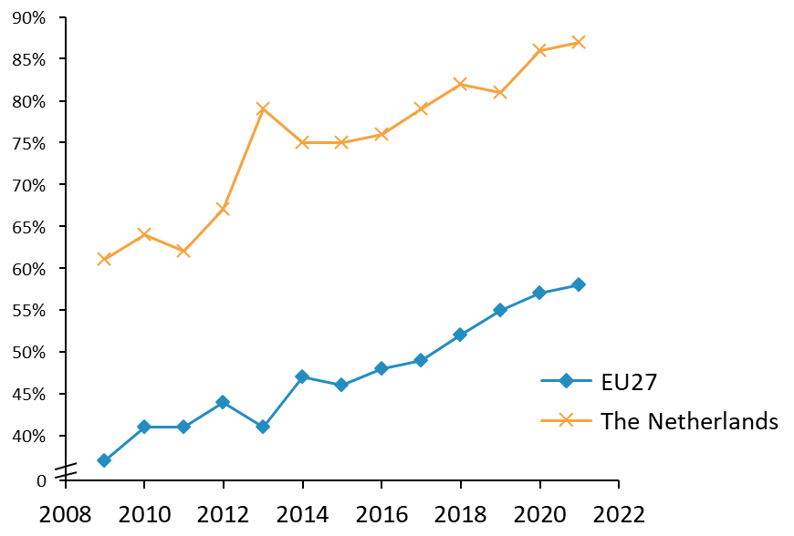
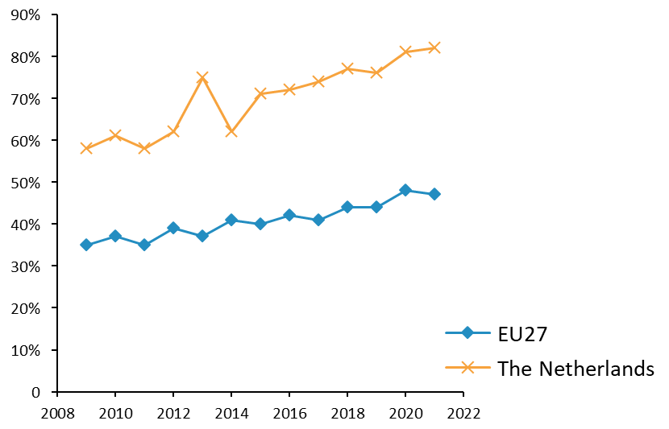
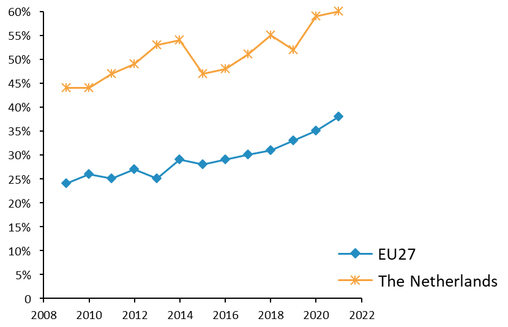
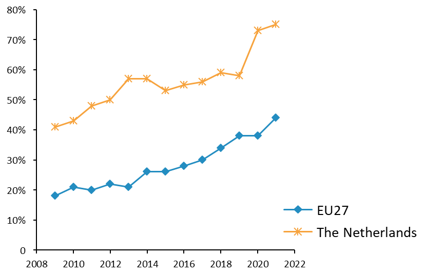
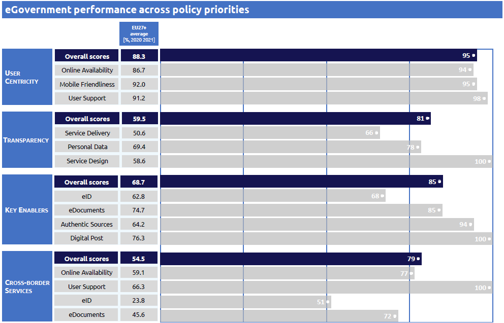
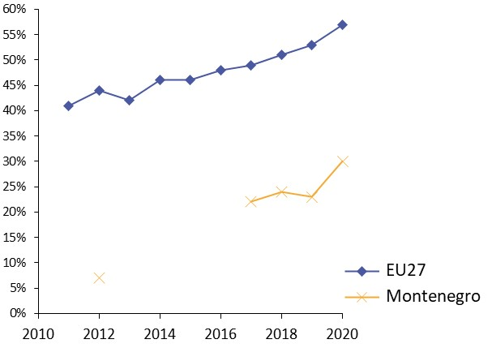
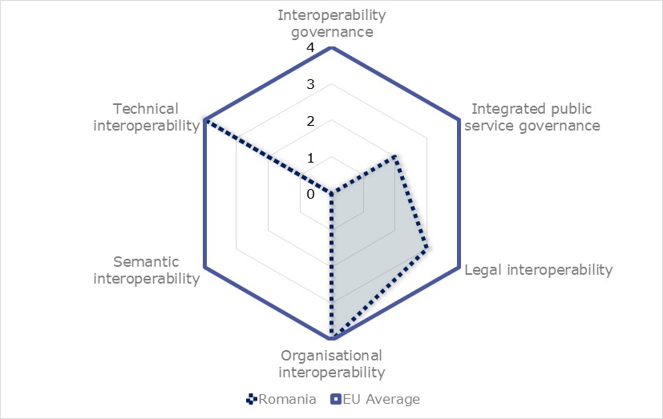

Digital Public Administration factsheet 2021
Netherlands
Digital Public Administration factsheet 2022
Table of Contents
2 Digital Public Administration Highlights 10
3 Digital Public Administration Political Communications 13
4 Digital Public Administration Legislation 20
5 Digital Public Administration Governance 25
6 Digital Public Administration Infrastructure 28
7 Cross-border Digital Public Administration Services for Citizens and Businesses 38
Country
Profile
1
Country Profile
Digital Public Administration Indicators
The following graphs present data for the latest Digital Public Administration Indicators for the Netherlands compared to the EU average. Statistical indicators in this section reflect those of Eurostat at the time the Edition is being prepared.
Percentage of individuals using the internet for interacting with public authorities in the Netherlands  | Percentage of individuals using the internet for obtaining information from public authorities in the Netherlands  | ||
Percentage of individuals using the internet for downloading official forms from public authorities in the Netherlands  | Percentage of individuals using the internet for submitting completed forms to public authorities in the Netherlands  | ||
Interoperability State of Play
In 2017, the European Commission published the European Interoperability Framework (EIF) to give specific guidance on how to set up interoperable digital public services through a set of 47 recommendations. The picture below represents the three pillars of the EIF around which the EIF Monitoring Mechanism was built to evaluate the level of implementation of the EIF within the Member States. It is based on a set of 71 Key Performance Indicators (KPIs) clustered within the three main pillars of the EIF (Principles, Layers and Conceptual model), outlined below.

Source: European Interoperability Framework Monitoring Mechanism 2021
Source: European Interoperability Framework Monitoring Mechanism 2021
Source: European Interoperability Framework Monitoring Mechanism 2021
Source: European Interoperability Framework Monitoring Mechanism 2021
eGovernment State of Play
The graph below presents the main highlights of the latest eGovernment Benchmark Report, an assessment of eGovernment services in 36 countries: the 27 European Union Member States, as well as Iceland, Norway, Montenegro, the Republic of Serbia, Switzerland, Turkey, Albania and Macedonia (referred to as the EU27+).
The study evaluates online public services on four dimensions:
- User centricity: indicates the extent to which a service is provided online, its mobile friendliness and its usability (in terms of available online support and feedback mechanisms).
- Transparency: indicates the extent to which governments are transparent about (i) the process of service delivery, (ii) policy making and digital service design processes and (iii) the personal data processed in public services.
- Cross-border services: indicates the extent to which users of public services from another European country can use the online services.
- Key enablers: indicates the extent to which technical and organizational pre-conditions for eGovernment service provision are in place, such as electronic identification and authentic sources.
The 2022 report presents the biennial results, achieved over the past two years of measurement of all nine life events used to measure the above-mentioned key dimensions. More specifically, these life events are divided between seven ‘Citizen life events’ (Starting a small claim procedure, Moving, Owning a car, Health measured in 2021, and Career, Studying, Family life, measured in 2020) and two ‘Business life events’ (Regular Business Operations, measured in 2021, and Business start-up, measured in 2020).
Source: eGovernment Benchmark Report 2022 Country Factsheets

Digital Public Administration Highlights
2
Digital Public Administration Highlights
| Digital Public Administration Political Communications |

Recently, the Minister on Digitalisation published a policy letter on digitalisation, which focuses on the conditions needed to realise digital solutions (digital foundation), digital government (public services of the government), digital society and digital economy. Based on this letter, an action-oriented agenda will be developed.
In 2021, the Dutch Inter-administrative Data strategy was published. The strategy outlines how the government can tackle social challenges using data in an effective and responsible way. The data strategy also contains initial suggestions for data system functions that should be available to all government bodies. Lastly, the data strategy elaborates on the need for orchestration of responsible data sharing.
Digital Public Administration Legislation |
The Electronic Announcement Act established the obligation for national government official publications to be published on the internet rather than on paper (official journals, local papers etc.). The aim of the latest amendment, that came into force on 1 July 2021, is to define the obligation for administrative bodies (including local and regional government bodies) to publish all official announcements and publications in digital official journals such as local and provincial papers, and also to arrange a digital solution allowing everyone to receive messages via e-mail.
| Digital Public Administration Governance |

As of 10 January 2022, a newly created position of Minister for Digitalisation has been established. The dedicated Minister will be responsible for the coordination regarding the digital ambitions of the government.
In July 2020, the Dutch government published proposals for strengthened governance. The proposal contained important lessons such as the need for a clearer definition of the GDI, need for direction of the coherence and further development of the GDI, the need for more clarity in the roles and responsibilities in the governance and the undesirable side effects (e.g. less use) of financing system on the basis of the profit principle. In the new proposals, a multiannual investment framework for further development and renewal of the GDI has been introduced, as well as an annual cycle for prioritising and allocating resources in collaboration with stakeholders.
Digital Public Administration Infrastructure |
Transparency regarding the use of citizen data is of great importance to the Dutch government. As part of that effort, as of 14 March 2022, Dutch citizens can use MijnOverheid to see which information from the Personal Records Base Registry (BRP) is being shared with which (government) organisations. The reason for sharing is also given, as well as a way to contact the organization in question.

Digital Public Administration Political Communications
3
Digital Public Administration Political Communications
Specific political communications on digital public administration
NL Digibeter: Digital Government Agenda
The new Digital Government Agenda was published in July 2018 and updated in July 2019 and June 2020. Former State Secretary of the Ministry of the Interior and Kingdom Relations Mr. Raymond Knops was responsible for its implementation. The Digital Government Agenda is closely connected to the broader Dutch Digitalisation Strategy. The Digital Government Agenda is drawn up in close co-operation with other levels of government and key public and private partners. It is also tied with the Tallinn declaration on eGovernment.
The agenda is aimed at making optimal use of the opportunities that digitalisation offers, while it safeguards public values, like autonomy of individual citizens and promoting inclusion.
The Digital Government Agenda focuses on:
- Investing in innovation;
- Protecting fundamental rights and public values;
- Being accessible, understandable and intended for everyone;
- Making public services more personal; and
- Being ready for the future.
The main implementation milestones include:
- Publication of the Inclusion Letter in December 2018, with a focus on making services easier for everyone, helping people to go digital, explaining people what happens when they go digital, and cooperating with other organisations. The letter was written in non-official and accessible language. The progress report was published in November 2020;
- Publication of the Data Agenda NL Digitaal in March 2019. The agenda is about the flow of data in society and is aimed at optimal and responsible use of data in public administration bodies. The agenda aims at data driven approaches for solving societal issues, promoting public values, improving quality of data and the efficient reuse thereof, sharing knowledge about data-driven work, investing in people, organising and changing culture; the 2020 update was published in April 2020; and
- Publication of the Policy Letter on Artificial Intelligence (AI) in October 2019. The letter provides an overview of the opportunities and risks of AI for public values that are based on human rights and describes existing and future policy measures. The policy letter was published in close connection to the Dutch AI strategy SAPAI. In November 2020, a letter was sent to Parliament about the use of algorithms. In 2021, the cabinet awarded EUR 276 million for the first phase of a strategic programme on AI (AiNed programme).
Dutch Digitalisation Strategy
The Dutch Digitalisation Strategy, published in June 2018 and updated in July 2019 and in June 2020, was a Cabinet-wide strategy that considered every aspect of digitalisation. The digitalisation strategy aims at:
- Leveraging social and economic benefits, with a focus on healthcare, mobility, energy and the agri-food sector, and the digitalisation of public administration; and
- Strengthening the foundation for digitalisation – with a focus on research and development, changes in employment models, new skills and lifelong learning, a fair digital and data driven economy with world-class infrastructure, strengthening the resilience of citizens and organisations, and fundamental rights and ethics in the digital age.
iStrategy
In February 2019, the Minister of the Interior submitted the Strategic I Agenda 2021-2025 to Parliament. The Strategic I agenda is aimed at the central government and it describes the generic activities of the CIO council (the interdepartmental council of Chief Information Officers). The agenda deals with the following themes: reliable information and data; well-functioning, consistent and robust ICT; knowledge and skills; and strategic I-governance. With the letter of 6 January 2021 the Parliament was informed about the progress.
Interoperability
Policy Framework for the Further Development of the Digital Government Infrastructure
The Policy Framework for the Further Development of the Digital Government Infrastructure was published in connection with the publication of NL DigiBeter2.0. The policy framework includes some principles aimed to develop the policy for the digital government basic infrastructure and to further develop the generic functions of the digital government basic infrastructure. The generic functions are based on agreements, standards and building blocks.
Key enablers
Access to public information
Open Government Vision and Action Plan
Closely interlinked with the 2017 Digital ambitions, the Open Government Vision and Action Plan were presented to the Parliament on 1 September 2013. The vision paper described different developments around the topic of open government and underlined the importance of more openness from an economic, democratic and societal perspective. Three main themes were addressed in the vision paper: more transparency around government activities, government responsiveness to initiatives from society, and government accountability. The main principle was an active disclosure of information.
- Open decision-making at municipal and provincial level;
- Strengthening the transparency of political party funding as part of decentralised governance; and
- Pioneering an Open Government Network for Municipalities.
National Data Agenda
The new government Data Agenda NL Digitaal was published in March 2019 and updated in April 2020. The agenda focuses on the flow of data in society and is aimed at optimal and responsible use of data in public administration bodies. The agenda aims at data driven approaches for solving societal issues, promoting public values, improving the quality of data and the efficient reuse thereof, sharing knowledge about data driven working, investing in people, organising and changing culture.
In 2021, the Dutch Inter-administrative Data strategy was published. The strategy outlines how the government can tackle social challenges using data in an effective and responsible way. The data strategy also contains initial suggestions for data system functions that should be available to all government bodies. Lastly, the data strategy elaborates on the need for orchestration of responsible data sharing.
eID and Trust Services
eID Progress
Twice a year, the Parliament is informed about the progress of the eID Programme. The purpose of the programme is to enable user-friendly, safe and reliable digital interaction of citizens and businesses with the government. In March 2021 and October 2021 the Dutch Parliament was informed about the progress of eID means and processes.
Security aspects
National Cybersecurity Agenda
In connection to the digitalisation strategy, the National Cybersecurity Agenda (NCSA) was published in June 2018. The objective of the National Cyber Security Agenda is to tackle increasing threats and vulnerabilities in the digital domain. This is done by setting out the next steps required in cybersecurity. The NCSA comprises seven targets pursuing the following objectives:
- Being able to capitalise on the economic and social opportunities of digitalisation in a secure way and of protecting national security in the digital domain;
- Having adequate digital capabilities to detect, mitigate and respond decisively to cyber threats;
- Contributing to international peace and security in the digital domain;
- Being at the forefront of digitally-secure hardware and software;
- Having resilient digital processes and a robust infrastructure;
- Having efficient barriers against cybercrime;
- Leading the way in the field of cybersecurity knowledge development; and
- Having an integrated and strong public-private approach to cybersecurity.
Government Information Security Baseline
In October 2018, a policy letter was sent to the Parliament concerning measures to improve information security in the public sector. As a follow up, the Government Information Security Baseline (Baseline Informatiebeveiliging Overheid, BIO) has been effective since 1 January 2020. The BIO is the basic information security framework encompassing all layers of the public sector: central government, municipalities, provinces and water authorities.
Interconnection of base registries
Dutch Base Registries System
The system of base registries has been operational for a decade. In June 2019, the Court of Audit published the investigation into the base registries system operation and issued an advice to the Minister of the Interior and Kingdom Relations. In response to this advice and the discussions in Parliament, the government issued letters about the further development of the system, including its intentions to set up a central reporting point and develop a vision on the future of the system. In November 2020, the government issued a letter to Parliament about the current developments and further improvement of the system of base registries, including a central hotline for reporting errors in the registrations and the latest scheme for the base registries and its interconnections. In January 2021, the central reporting point (Meldpunt Fouten in overheidsregistraties, MFO) was realised. The MFO helps citizens, companies and organisations solve problems with regard to government registries.
eProcurement
No political communication has been adopted in this field to date.
Domain-specific political communications
Approach to Digitalisation in the Judiciary
The Ministry of Justice and Security published its approach to digitalisation in the criminal justice domain. This approach addressed the need for improving information through the digitalisation of procedural documents throughout the entire criminal justice chain, both for internal use and for exchanges with third parties.
Digital Agenda for Primary and Secondary Education
The Ministry of Education published the Digital Agenda for Primary and Secondary Education. The agenda was aimed at strengthening the innovative capacity of schools and teachers, digital literacy among pupils and teachers, innovative educational resources, infrastructure and ethics/public values.
Emerging technologies
Artificial Intelligence (AI)
Public Values and Technology in Society
In March 2018, the Minister of the Interior and Kingdom Relations sent a letter to the Parliament in reply to the Rathenau Institute's reports Urgent Upgrade - Guaranteeing Public Values in the Digital Society and Human Rights in the Robot Age. In both reports, the Rathenau Institute provided the cabinet with recommendations on how to deal with the impact of technology on important public values – in particular human rights – in our society.
On 10 October 2019, the Ministry of the Interior and Kingdom Relations published a Policy Letter on Artificial Intelligence (AI). The letter provides an overview of the opportunities and risks of AI for public values that are based on human rights; it also describes existing and future policy measures. The policy letter was published in close connection to the broader Strategic Action Plan on Artificial Intelligence (SAPAI) published by the Ministry of Economic Affairs and Climate Policy . Both documents have been prepared in close cooperation between the Ministry of Economic Affairs and Climate Policy, the Ministry of Justice and Security, and the Ministry of the Interior and Kingdom Relations.
In October 2019, the Ministry of the Interior and Kingdom Relations published a collection of essays named ‘Appropriate use of data in public space’. The aim was to identify possible challenges related to data policy derived from the use of different new technologies (AI, Internet of Things, blockchain) and to establish a shared view on these issues. In November 2020, a letter was sent to the Parliament about the use of algorithms.
Distributed ledger technologies
Dutch Blockchain Coalition
As part of the Dutch Digitalisation Agenda, the Dutch Blockchain Coalition (DBC) is a joint venture between partners from the government, knowledge institutions and industry. The DBC's mission is to promote reliable and robust blockchain technologies, create the best possible conditions to allow blockchain applications to arise, and utilise blockchain as a source of trust, welfare, prosperity and security for the Dutch society. For this mission, the DBC is mainly a catalyst and facilitator that activates and connects within a broad public-private network.
In both the AI and blockchain Coalitions the application of new technologies in public administration is addressed. In connection with the two main coalitions mentioned above, the Dutch government focuses on building a Community of Practice, providing guidelines and instruments to develop and deploy new technology solutions – mainly AI and blockchain – to solve societal challenges and improve public services. Use cases are stimulated using a variety of instruments, such as hackathons, pre-commercial procurement and buyer groups.
Big data
No political communication was adopted in this field to date.
Cloud computing
No political communication was adopted in this field to date.
Internet of Things (IoT)
No political communication was adopted in this field to date.
High-performance computing
No political communication was adopted in this field to date.
High-speed broadband connectivity
Connectivity Action Plan
In July 2018, the Ministry of Economic Affairs and Climate Policy published the Connectivity Action Plan, which refines the objectives of the Dutch Digitalisation Strategy and outlines the government’s efforts to remain the European digital leader. Its aim is to provide high-quality connectivity that can serve a wide range of demands and is available at competitive prices anytime and everywhere. In this Plan, the Dutch government supports the EU Gigabit Society targets. All households should have the opportunity to access broadband networks of at least 100 Mbps and a vast majority should be taking advantage of 1 Gbps by 2023.

Digital Public Administration Legislation
4
Digital Public Administration Legislation
Specific legislation on digital public administration
Digital Government Law
The Digital Government Law (wet Digitale Overheid) was submitted to the Parliament for approval in June 2018. The House of Representatives passed it on 18 February 2020. The main objective of the draft law was to ensure safe access of Dutch citizens and businesses to (para-) governmental agencies. The law also sets minimum mandatory standards. The Parliament amended the bill with an arrangement on online identities. The law is pending adoption in the Senate. Moreover, as a result of questions posed and concerns expressed by the Ministry of Economic Affairs and Climate Policy regarding the protection of privacy, an amendment of the bill has been submitted. In this amendment, privacy by design, a ban on trade of personal data and open source as key elements of allowing login means are legally anchored. This amendment is currently under consideration by the House of Representatives.
Administrative Law
Legislation on Administrative Law contains general rules concerning the relationship between the government and individual citizens, companies and the like. The 2004 amendment of the law regulates administrative electronic traffic (mod. 2004). Currently, further modification has been proposed to establish the right for digital interaction with government. The proposal is pending adoption.
Electronic Announcement Act
The Electronic Announcement Act established the obligation for national government official publications to be published on the internet rather than on paper (official journals, local papers etc.). The aim of the latest amendment, that came into force on 1 July 2021, is to define the obligation for administrative bodies (including local and regional government bodies) to publish all official announcements and publications in digital official journals such as local and provincial papers, and also to arrange a digital solution allowing everyone to receive messages via e-mail.
Interoperability
No legislation was adopted in this field to date.
Key enablers
Access to public information
Government Information (Public Access) Act
Freedom of Information legislation was first adopted in the Netherlands in 1978. It was replaced by the Act of 31 October 1991 on Public Access to Government Information. Under the 1991 Act, any person can request information related to an administrative matter if it is contained in documents held by public authorities or companies carrying out work on behalf of a public authority. A revised version of the law will enter into force on 1 May 2022. Some of the changes include shortening of the time period to respond to information requests and putting more emphasis on active disclosure of information on a new government website (PLOOI).
Reuse of Public Sector Information
The Directive on open data and the re-use of public sector information, also known as the Open Data Directive (Directive (EU) 2019/1024) entered into force on 16 July 2019. It replaces the Public Sector Information Directive, also known as PSI Directive (Directive 2003/98/EC) dating back to 2003 and was subsequently amended by Directive 2013/37/EU. Transposition into national law is under preparation.
eID and Trust Services
Electronic Signature Act
The Regulation on electronic identification and trust services for electronic transactions in the internal market (EU Regulation 910/2014) entered into force on 1 July 2016 and sets standards for electronic identification and trust services for electronic transactions in the single market. The national eIDAS Implementation Act has been applicable since February 2017. The act implements parts of the eIDAS Regulation by means of changes in existing Dutch laws such as the Telecommunications Law, Civil Law and General Administrative Law. The eID part will be transposed in the Digital Government Law.
Security aspects
Digital Government Law
The proposed Digital Government Law (wet Digitale Overheid) has as its objective to ensure safe access to Dutch citizens and businesses to (semi) government entities. The law will indirectly regulate mandatory minimal standards for internet security.
General Data Protection Regulation
The General Data Protection Regulation (EU) 2016/679 has been applicable as of 25 May 2018. It ensures that the same privacy rules apply across the European Union. In the Netherlands, the GDPR has been transposed into law.
Interconnection of base registries
Base Registries System
The system of base registries consists of 10 registries and services for data exchange. Each base registry is regulated by specific legislation, following 12 common requirements agreed to in 2003.
One of the base registries is the Personal Records Base Registry and BRP law. Applicable since 2015, it sets the following objectives: i) promoting the efficient provision of personal data; ii) modernising the registry; and iii) managing the corresponding legal protection and privacy of individuals. It describes how the registration should be organised and who should be responsible for managing data and central facilities. Additionally, the legislation describes the specific information personal records must include and the registration process. This law details the information the registry can provide.
Trade Register Act
Another important base registry is the Trade Register, the register for companies and legal persons. It is regulated by the Trade Registry Act. This act describes the fundamentals for the creation of the Business Register (for instance, promoting legal certainty in trade), defines who is in charge of the register (the Chamber), and what kind of companies are registered. It details the information about companies, the person to whom they belong, legal persons, and other data. The Act also includes articles regarding the provision and the use of data (use by administrative bodies, one-time data provision, etc.), the change of data already entered in the register and data quality (controls to ensure the availability, performance, security, accuracy and completeness of data).
Unique Identifying Numbers Law
- The Unique Identifying Numbers Law introduces a unique personal number in order to increase the efficiency of the administration and to improve services to citizens. To achieve this, the legislation includes information about the management, creation and assignment of numbers.
eProcurement
Procurement Act
Since 1 April 2013, the Procurement Act 2012 has become applicable to all procurement processes conducted by (semi) public organisations in the Netherlands. More information is available on the PIANOO portal.
The EU eInvoicing Directive 2014/55/EU was implemented in national legislation by means of a Decision which amended the Dutch Procurement Law and the Dutch Procurement Law for the Defence and Safety Domain. The amendment of the procurement law is known as eInvoicing legislation.
Furthermore, in the Netherlands B2G eInvoicing has been mandatory since January 2017 for central government agencies. Since 18 April 2019, all government bodies were obliged to accept and process eInvoices.
Domain-specific legislation
Services Act
The Services Act (Dienstenwet) simplified the business activities for service providers in all EU Member States. It implemented the EU Services Directive which took effect on 28 December 2009, and incorporated the main rules from the EU Services Directive into Dutch law. It introduced the right for entrepreneurs to interact with government digitally for a specific set of services.
SUWI Act
The SUWI act defines mandatory digital interactions between citizens and government in the employment and income domain, in particular with the Employee Insurance Agency (UWV).
Emerging technologies
Artificial Intelligence (AI)
No legislation was adopted in this field to date.
Distributed ledger technologies
No legislation was adopted in this field to date.
Big data
No legislation was adopted in this field to date.
Cloud computing
No legislation was adopted in this field to date.
Internet of Things (IoT)
Upcoming legislation on smart devices security
A communication from the Netherlands Enterprise Agency announced that the Dutch Parliament is currently discussing to introduce minimum requirements to ensure the digital security of devices connected to the internet –IoT devices. These new rules will apply to all wireless devices and products that communicate via and are connected to the internet, such as routers, security cameras, smart thermostats, fridges, lamps, doorbells, etc. This legislation is expected to come into force on 1 July 2024.
High-performance computing
No legislation has been adopted in this field to date.
High-speed broadband connectivity
No legislation has been adopted in this field to date.
Other emerging technologies
Experimental Law on Self-Driving Vehicles
On 1 July 2019, the new Experimental Law on Self-Driving Vehicles was enacted, enabling public road tests involving self-driving under defined conditions. Prior to the approval from the Minister of Infrastructure and Water Management, applications for such tests were assessed by the Netherlands Vehicle Authority (RDW), the police, road authorities, and the Dutch Institute for Road Safety Research (SWOV). They verify whether the prevention of traffic safety risks is sufficiently warranted. This aims to place the Netherlands at the forefront among the countries that are getting ready for self-driving transport.

Digital Public Administration Governance
5
Digital Public Administration Governance
National
Ministry of the Interior and Kingdom Relations
Political responsibility for digital government lies with the State Secretary for the Interior and Kingdom Relations. Sectorial ministers are responsible for ICT in their domains.
Digital Government Policy Consultation
In February 2018, the Digital Government Policy Consultation (OBDO) was set up. The OBDO is an intergovernmental consultative body on digital government. It advises the State secretary about the common policy.
A programming board has the task of advising the OBDO on the desired and/or necessary further development of the Digital Government Infrastructure services managed by Logius.
Government ICT Unit
The Government ICT Unit (ICTU) is an independent consultancy and provides organisation services to the government. The objective of the ICTU is to support the government with the development, introduction and implementation of innovative ICT applications (mainly government wide solutions). The ICTU is a non-profit organisation which executes programmes under commission (mostly commissioned by the central government). The ICTU also conducts the day-to-day management of NORA and is responsible for further development on behalf of the Ministry of the Interior and Kingdom Relations.
Government Shared Services for ICT (Logius)
Standardisation Forum
The Standardisation Forum promotes interoperability, not only within the government system itself, but also in relations between government agencies on the one hand and citizens and businesses on the other. The Standardisation Forum reports to the OBDO.
Additionally, the Standardisation Forum fosters cross-border interoperability with its motto “Exchange of information does not stop at the border”, making direct references to the European Multi-Stakeholder Platform on ICT.
System of Base Registries
The system of ten base registries is operational. Several Ministries are responsible for base registries in their domain. The Ministry of the Interior and Kingdom Relations is responsible for the coherence of the system. For coordination, the OBDO is in place. It includes descriptions of base registries and responsible Ministries.
Court of Audit
The Court of Audit has a legal mandate to carry out performance (or value-for-money) audits, which result in regular reports to the Parliament about the efficiency and effectiveness of government management and activities. It is independent from the government, and its tasks, powers and legal status are laid down in the Constitution and the Government Accounts Act.
Data Protection Authority
The Data Protection Authority (DPA) supervises compliance with acts that regulate the use of personal data. As such, it oversees the compliance with and application of the Personal Data Protection Act, the Data Protection [Police Files] Act and the Personal Records Base Registry and BRP Law .
Subnational (federal, regional and local)
The VNG developed the ‘Value-based Information Society: Digital Agenda for Municipalities 2024’ in 2020, an agenda with three focus areas: enabling, leveraging the potential, and interpreting/reflecting. The 2024 agenda builds further on the Digital Agenda 2020. The accomplishment of the agenda is the responsibility of the Information Society Policy committee.
VNG Realisatie
VNG Realisatie is responsible for the development and management of municipal eGovernment standards. It acts as a partner of municipalities on information management.
Digital Public Administration Infrastructure
6
Digital Public Administration Infrastructure
Portals
National Portals
Overheid.nl: Government Portal
The Overheid.nl portal, which translates to government.nl, was introduced in the first eGovernment action plan of 1999. It contributes to transparency in public administration. Overheid.nl serves as the central access point for all information relating to government organisations. The portal provides information about services for persons and businesses, divided by themes, life events and location. It provides consolidated national legislation, official publications, local and regional legislation and offers internet consultation services. The portal links to EU legislation, the Open Data Portal and the common website of the ministries, with documents, publications and news items on all domains. The portal also offers access in the form of a personalised environment. In 2020, there were a total of 33 million visits to the portal.
Ondernemersplein: Business Portal
The Ministry of the Interior and Kingdom Relations administers the business forum, where entrepreneurs can discuss matters of direct concern.
Cooperating Catalogues
The Cooperating Catalogues is a standard to provide citizens and businesses with a one-stop-shop entry for government products and services, wherever they may start searching. Cooperating Catalogues is a standard for publishing and exchanging metadata about products and services. The information form Cooperating Catalogues will be available on the portals overheid.nl and ondernemersplein.nl, as well as on the websites of participating government organisations.
Mijnoverheid.nl: Portal for Personal Services
Mijnoverheid.nl is a portal for personal services in which citizens can access personalised information and digital messages from the government. As of the end of 2020, 8.5 million accounts had been activated, a 6.9% increase compared to the previous year. The portal offers the following functionalities:
- Citizens can access registers, and view their personal data registered by government, such as their address and family data, work & income data, pension data, and data regarding real estate and vehicles. In 2020, Dutch citizens viewed their personal data 10.8 million times. Through a link to the organisation responsible for the Personal Records Base Registry (BRP), citizens can also see which organisations are entitled to receive data from each base registry;
- Citizens can receive messages from different government organisations in their secure message box. The Tax Department is one of the key customers of this service. In 2020, a total of 82.3 million messages were sent to the message box; about the same as in the previous year. In October 2018, the message box app was launched to enable citizens to easily read mail from the government on a smartphone or tablet; and
- Citizens can follow the workflow, after having applied for services with participating municipalities. A total of 34 organisations were connected to the workflow functionality at the end of 2020.
Digipoort
Through Digipoort, the electronic exchange portal for businesses, government organisations and businesses can quickly and efficiently exchange structured digital information. Every connected business can exchange digital information with the government.
Digipoort complies with the highest criteria for trust, availability and security. Messaging over Digipoort is secured by a government certificate. This is how the authenticity of messages is secured and public bodies and businesses know where messages originate from and are delivered. The certificate also secures that messages cannot be altered.
Digipoort is a messaging hub supporting large messages. Standards like eDelivery are being used to make sure the message will arrive as intended.
In 2020, about 21 thousand (inter)national businesses and intermediaries used Digipoort to send 111.6 million messages to 158 Dutch public bodies. Thanks to Digipoort, the administrative burdens for businesses and government decreased significantly. Digipoort is used in a variety of environments, like finance, logistics, transport, social security, etc.
Dutch Open Data Portal
Subnational Portals
Overheid.nl
Overheid.nl is the main portal at the subnational level as it connects local and regional websites together.
Networks
National API Strategy
The Developer Overheid portal was launched in 2019 to provide access to all information targeted at IT developers within government and all subcontractors. In particular, this website is being positioned as an overview of the available APIs within the government.
Diginetwerk
Diginetwerk connects (existing) physical government organisation networks to one another. This results in a single closed virtual government network. Within that network, government bodies are able to securely exchange data. Diginetwerk provides connectivity and increases efficiency, because one organisation requires just one connection to be able to exchange data with various government organisations.
Trans European Services for Telematics between Administrations
Data Exchange
Data Exchange Services of the Base Registers System
The smart exchange of data from the system of base registers enables the government to operate more efficiently and to improve its service. Four system services support base registries in their aim to offer their catalogue of products and services to users in a consistent way. The system of base registries identifies the following system services, namely, Digilevering, Digimelding, Digikoppeling and Stelselcatalogus:
- Digilevering distributes up-to-date and accurate key registry data to key registry clients in the shape of event messages, for instance the relocation of a company, the birth of a person, or a change in somebody’s income. Each recipient organisation is responsible for determining which data are relevant;
- Digimelding: the information stored in key registries has to be up-to-date and reliable. One of the tools used to guarantee the quality of the key registries is Digimelding (digital notification), which enables users to report back. All base registries users have a legal duty to report any mistake in their data they may be aware of. Reporting back contributes to efficient operations management within the government, improves the level of service, and increases the opportunities to fight fraud;
- Digikoppeling sets out interface standards and contains agreements for the exchange of messages between authorities. One Digikoppeling implementation in an IT-environment enables users to exchange messages with all authorities, and to join nearly all generic functions of the digital government basic infrastructure, for instance the key registries. Governmental as well as private organisations performing a public task can use Digikoppeling; and
- Stelselcatalogus: the System Catalogue lists data contained in the base registries system, what they mean, and how they are interconnected. The System Catalogue is targeted to inform policy makers and legislation lawyers. The source code for Stelselcatalogus can be found as open-source software in Github through the OSSG (OpenSourceSoftwareGegevenscatalogus).
Standard Business Reporting
The SBR is already operational. The following organisations accept or require the SBR: Tax and Customs Administration (e.g. Value Added Tax, Corporation Tax Return), Chamber of Commerce (annual reports), Central Statistical Office (production and investment statistics), and banks (annual credit reports). In 2021, a total of 52 million SBR messages were exchanged.
eID and Trust Services
DigiD
In the eID approach, public and private authentication solutions coexist. The public solution for citizens (DigiD) is reserved for G2C authentications. The policy aims at strengthening DigiD in two ways: on the one hand by introducing new certificates on ID cards and driving licences to have a higher level of trust, and on the other hand by accepting private authentication solutions under strict conditions in order to promote resilience.
DigiD enables individuals to identify themselves for digital services. DigiD offers security: you know who you are dealing with. Using DigiD, the Citizen Service Number (BSN) of the person logging in is disclosed. This makes it possible to check the information already on file for that individual and offer personalised services. At this moment, logging in involves a user name and a password, and in some cases a text message for further verification. In July 2017 the DigiD App was launched.
DigiD is available at three levels:
- Basic (user name and password: DigiD);
- Medium (DigiD + sms-authentication or using the DigiD app), which both represent a stork QAA level 2; and
- Substantial (the DigiD app upgraded with an ID verification), stork QAA level 3.
Although it is not mandatory by law yet, DigiD has become the main authentication system for citizens. There were a total of 18.3 million active accounts in 2020. In 2020 the platform was connected to 1 124 web-services provided by 701 public institutions. In 2020, more than 402.5 million DigiD authentications were made.
DigiD Authorise
DigiD Authorise enables users of a digital service to authorise someone to act on their behalf. This can come in handy if the user is not familiar with using computers or digital services or wants to defer the task to someone who is more knowledgeable in the subject matter. DigiD Authorise users do not need to disclose their own DigiD to the person they authorise and grant the authorisation only for one specific service. In 2020, there were 2.6 million active authorisations.
Administrative Facility BSN
The administrative facility citizen service number (Beheervoorziening burgerservicenummer, BV BSN) is in charge of generating, issuing, managing and consulting the citizen service number (BSN). The BV BSN controls access to the identifying data in the underlying authentic registries (Municipal Key Registry Personal Data, or GBA in Dutch, and the Non-Residents Records Database). It also controls access to the verification registries for identity documents to verify identity at the counter.
eRecognition
eRecognition (eHerkenning) is the eIdentity Trust Framework enabling authentication for government agencies and businesses. With an eHerkenning authentication token, users can log in to online services offered by government agencies and businesses. Authentication tokens are technology neutral; therefore, a range of options is available for users (e.g., SMS, OTP, certificate, user name/password). The four assurance levels provided by STORK are reused within eHerkenning in combination with a registry of mandates: users have to be mandated by their organisation for the tasks they are allowed to perform. At the end of 2021, a total of 0.75 million eRecognition means had been issued, accepted by over 500 public organisations where almost 17 million authentications were made.
PKIoverheid
The Public Key Infrastructure (PKI) for the government (PKIoverheid in Dutch) facilitates reliable digital communication inside and with the Dutch government. PKIoverheid is a very high-grade, safe infrastructure, based on digital certificates. A PKIoverheid certificate is used for: website security, remote authentication, legally valid electronic signatures and encryption of electronic messages.
eProcurement
PIANOo
The government procures around EUR 73 billion worth of work, services and supplies every year. PIANOo, the Dutch Public Procurement Expertise Centre, was set up to professionalise procurement and tendering in all government departments, with a view to improving efficiency and compliance with the rules. Professional procurement can contribute to successful policy and offers value for taxpayers' money. PIANOo brings procurement and tendering experts together, pools knowledge and experience and provides advice and practical tips. The Expertise Centre also fosters dialogue between public contracting authorities and private sector companies. PIANOo works for and with a network of around 3,500 public procurement and tendering professionals. PIANOo is part of the Dutch Ministry of Economic Affairs and Climate Policy.
Tenderned
NLCIUS
The NLCIUS is the development and enactment of a national derivative (substandard) of the European standard CIUS. The NLCIUS is maintained by Standardisation Platform eInvoicing (STPE). Furthermore, the STPE supports and stimulates the implementation and use of the European Norm and the technical implementation of eInvoicing solutions within sub-central government bodies (provinces, municipalities and water authorities). More information on eInvoicing is available here.
ePayment
iDeal is a Dutch private sector product, and all major banks participate in the initiative (ABN AMRO, ASN Bank, bunq, ING, Knab, Rabobank, RegioBank, Revolut, SNS, Svenska Handelsbanken, Triodos Bank, Van Lanschot). About 130 000 online shops and other organizations offer iDeal as a payment method. There are currently about 50 million iDeal transactions every month.
Knowledge Management
RADIO
The National Academy for Government Digitisation (RADIO) offers courses and various digital learning forums for policymakers to gain more insight into and gain experience with digitisation and computerisation.
NORA
‘User Needs First’ Community
Gebruiker Centraal (loosely translated as ‘User Needs First’) is a community of professionals working on digital government services. The community strives for a more user-friendly digital government. The core of the community is formed by an action team of 21 volunteers, all working in public administration (ranging from Ministries to municipalities). A team of 6 ambassadors helps promote the user perspective at board level.
Open Standards
Cross-border platforms
eIDAS Koppelpunt
Base registries
System of Base Registries
The smart exchange of data from the system of base registries enables the government to operate more efficiently and to improve its service.
From 2000 onwards, work has been done to realise the current operational system of 10 base registries, each anchored in legislation according to 12 agreed common principles. Already in 2003, principles were agreed for the selection of base registries, and the requirements for the legislation for each base registry.
The interconnection between Dutch registries has been established and the volumes of data exchange is steadily increasing. The GDI monitor visualises the number of users connected to base registries and the amount of messages sent per year.
Furthermore, consistency between registries is being monitored. Six base registries are partly or fully available as open data: BAG, BRV, BRK, BRT, BGT. The open geodata sets are available in the PDOK platform.
Four system services, Digikoppeling, Digilevering, Digimelding, and Stelselcatalogus, support the base registries and are described under the heading ‘data exchange’.
The systems of base registries comprise the following registries:
- The Personal Records Base Registry (BRP) is the base registry for personal data within the base registries system. The Dutch government uses the data recorded in the BRP. Amongst other things, these are: name, date and place of birth, address, and family ties. Other organisations also use BRP data, for instance pension funds and research institutions. The Municipal Personal Records Registry (GBA) and the Registry of Non-Residents (RNI) together constitute the Personal Records Base Registry (BRP). The Ministry in charge is the Ministry of the Interior and Kingdom Relations;
- The Trade Registry (HR) contains all data concerning businesses and legal entities. All other economic actors are also listed in this registry. This guarantees legal security when doing business. All government bodies will be required to make use of this registry. For instance, a municipality will have to consult the Trade Registry when searching for company details. The Ministry in charge is the Ministry of Economic Affairs and Climate Policy;
- The Base Registry for Addresses and Buildings (BAG) contains municipal basic data of all addresses and buildings inside a given municipality. The data is collected in a National Facility (Landelijke Voorziening, BAG LV). The Dutch cadastre manages BAG LV, and provides data to public offices, institutions, companies, and private citizens. The Ministry in charge is the Ministry of the Interior and Kingdom Relation;
- The Topography Base Registry (BRT) is a unique source of information for all mid- and small-scale topographic maps (1:10 000 or smaller) with which government authorities can easily exchange geographic information. It is kept by the Land Registry. The Ministry in charge is the Ministry of the Interior and Kingdom Relations;
- The Large Scale Topography Base Registry (BGT) is a digital map of the Netherlands, which records buildings, roads, waterways, plots and railway lines in a uniform way. The map is accurate up to 20 centimetres and contains many details, just as you would see in reality. In short, it documents the spatial organisation of our physical surroundings: trees, roads, buildings. The Ministry in charge is the Ministry of the Interior and Kingdom Relation;
- The Cadastral Records Base Registry (BRK) consists of the cadastral registration and the cadastral map (Kadastrale Kaart). Cadastral data are used by many clients as the foundation for their own work processes. In that sense, the Dutch cadastre has been a base registry for a long time. The cadastre’s products remain available through MijnKadaster and other channels. Direct links to other key registries will enable incorporation of the data of other registries into the cadastral registry and products. The Ministry in charge is the Ministry of the Interior and Kingdom Relations;
- The Vehicle Records Base Registry (BRV) lists data of vehicles, vehicle registration documents and holders of vehicle registration documents. The Netherlands Vehicle Authority (RDW, Dienst Wegverkeer) provides information from the registry to authorities, citizens, and businesses. The Ministry in charge is the Ministry of Infrastructure and Water Management;
- The Income Base Registry (BRI) contains the total income or taxable annual income of everybody who files an income tax return. Government organisations use the BRI to determine supplements, subsidies or benefits. The income registered in the BRI is called registered income. Users can view their registered income (for the previous tax year) on MijnOverheid (MyGovernment). The Ministry in charge is the Ministry of Finance;
- The Property Valuation Base Registry (WOZ) consists of several data needed to assign value both to an immovable property and a stakeholder. These are: the ‘established value’ (WOZ value), a BAG-listed address, and a link to cadastral parcels and/or addresses, and to BAG dwellings, stations, berths, and/or objects. The Ministry in charge is the Ministry of Finance; and
- The Subsoil Base Registry (BRO) contains all public data concerning the Dutch subsoil. The BRO Act, which came into effect on 1 January 2018, requires that source data owners provide and use soil and underground data in a digital form. The requirements will be expanded step by step in the next 4 years. The data in this key registry have been validated and are of importance for activities like freshwater procurement, underground transport and mining, but also for activities on the surface, like energy transition, housing construction and infrastructural projects. The Ministry in charge is the Ministry of the Interior and Kingdom Relations.
Emerging technologies
Artificial Intelligence (AI)
Amsterdam AI Registry
The cities of Amsterdam and Helsinki (Finland) have launched open AI registries that track how algorithms are being used in the municipalities with the aim to ensure that the AI used in public services operates on the same principles of responsibility, transparency, and security as other local government activities; and to improve both the availability of services and the experiences of customers.
Distributed ledger technologies
No digital public administration infrastructure has been adopted in this field to date.
Big data
No infrastructure was in this field to date.
Cloud computing
No infrastructure was reported in this field to date.
Internet of Things (IoT)
No infrastructure was reported in this field to date.
High-performance computing
No infrastructure was reported in this field to date.
High-speed broadband connectivity
No infrastructure was reported in this field to date.

Cross-border
Digital Public Administration Services
7
Cross-border Digital Public Administration Services for Citizens and Businesses
Further to the information on national digital public services provided in the previous chapters, this final chapter presents an overview of the basic cross-border public services provided to citizens and businesses in other European countries. Your Europe is taken as reference, as it is the EU one-stop shop which aims to simplify the life of both citizens and businesses by avoiding unnecessary inconvenience and red tape in regard to ‘life and travel’, as well as ‘doing business’ abroad. In order to do so, Your Europe offers information on basic rights under EU law, but also on how these rights are implemented in each individual country (where information has been provided by the national authorities). Free email or telephone contact with EU assistance services, to get more personalised or detailed help and advice is also available.
Please note that, in most cases, the EU rights described in Your Europe apply to all EU member countries plus Iceland, Liechtenstein and Norway, and sometimes to Switzerland. Information on Your Europe is provided by the relevant departments of the European Commission and complemented by content provided by the authorities of every country it covers. As the website consists of two sections - one for citizens and one for businesses, both managed by DG Internal Market, Industry, Entrepreneurship and SMEs (DG GROW) - below the main groups of services for each section are listed.
Life and Travel
For citizens, the following groups of services can be found on the website:
- Travel (e.g. Documents needed for travelling in Europe);
- Work and retirement (e.g. Unemployment and Benefits);
- Vehicles (e.g. Registration);
- Residence formalities (e.g. Elections abroad);
- Education and youth (e.g. Researchers);
- Health (e.g. Medical Treatment abroad);
- Family (e.g. Couples);
- Consumers (e.g. Shopping).
Doing Business
Regarding businesses, the groups of services on the website concern:
- Running a business (e.g. Developing a business);
- Taxation (e.g. Business tax);
- Selling in the EU (e.g. Public contracts);
- Human Resources (e.g. Employment contracts);
- Product requirements (e.g. Standards);
- Financing and Funding (e.g. Accounting);
- Dealing with Customers (e.g. Data protection).
.
The Digital Public Administration Factsheets
The factsheets present an overview of the state and progress of Digital Public Administration and Interoperability within European countries.
The factsheets are published on the Joinup platform, which is a joint initiative by the Directorate General for Informatics (DG DIGIT) and the Directorate General for Communications Networks, Content & Technology (DG CONNECT). This factsheet received a valuable contribution from the Ministry of the Interior and Kingdom Relations.
The Digital Public Administration factsheets are prepared for the European Commission by Wavestone.
An action supported by Interoperable Europe
Interoperable Europe will lead the process of achieving these goals and creating a reinforced interoperability policy that will work for everyone. The initiative is supported by the Digital Europe Programme.
Follow us
Interoperable Europe